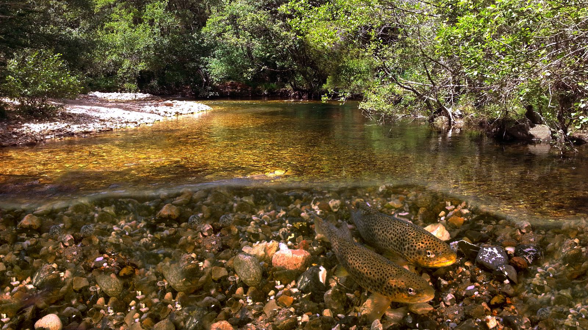
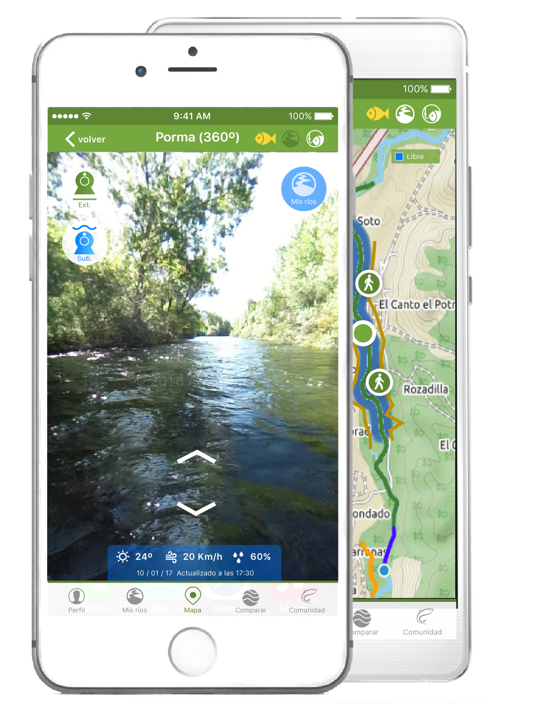
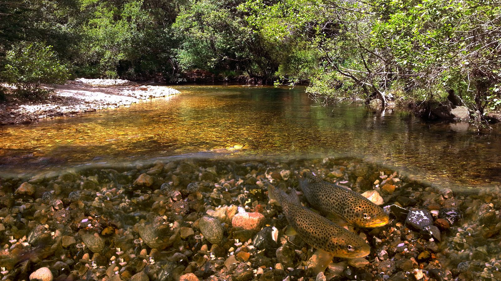
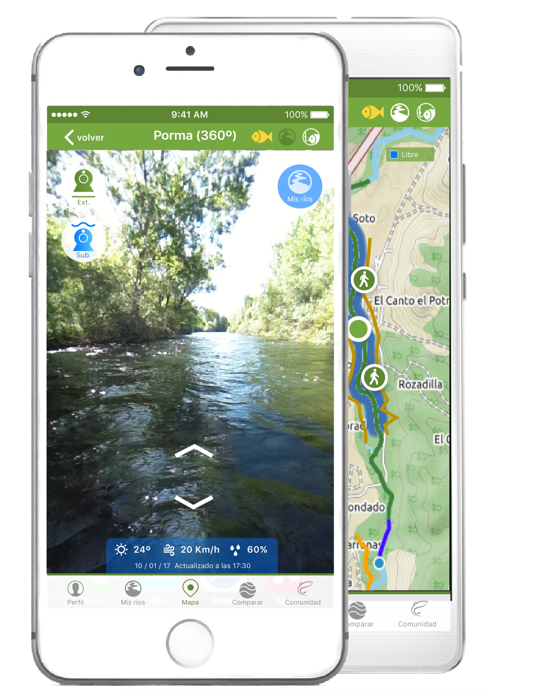
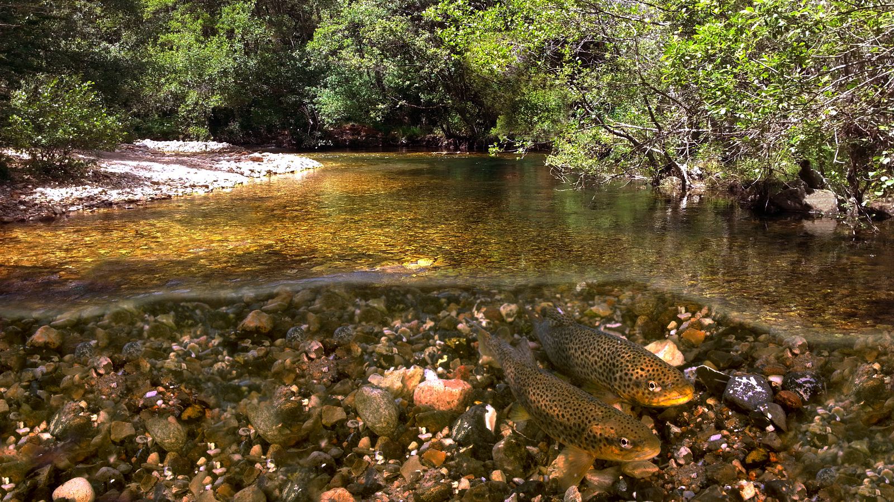
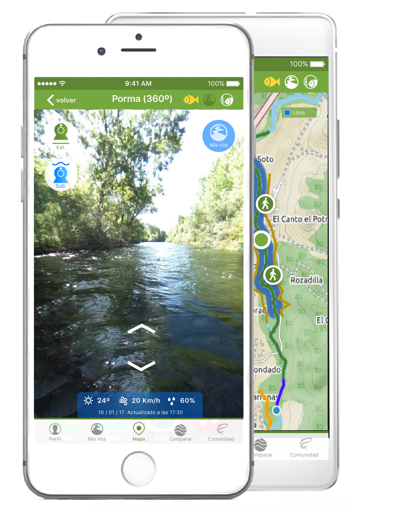

ES/EN
 



tu herramienta, tu pesca
vistas de tramos en 360º, cámaras exteriores y subacuáticas, comunidad y mucho más...
Social Share:
Seguir


vistas de tramos en 360º, cámaras exteriores y subacuáticas, comunidad y mucho más...
Social Share:
SeguirPuedes recorrer el río desde dentro, como si estuvieras allí mismo. En cada tramo puedes revisar sus orillas, escoger los mejores accesos al río y descubrir los rincones más adecuados para tus preferencias.
Mediante nuestras estaciones de captura puedes ver qué está pasando ahora mismo en cada tramo de río. Podrás consultar en todo momento tanto dentro como fuera del rio datos, tales como: la temperatura del agua, humedad, temperatura exterior, velocidad del viento y presión atmosferica.
Repasando los datos de semanas, meses y temporadas pasadas, y observando lo que está pasando ahora mismo, podrás anticipar y escoger los mejores tramos y momentos para pescar y los señuelos con mayor probabilidad de captura.
Conoce nuevos compañeros de pesca, comparte experiencias, logros y consejos con ellos. Disfruta de tu pasión por la pesca, en nuevos ríos y tramos, con pescadores que sienten y piensan como tú.
desde donde quieras,
cuando te apetezca